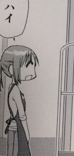
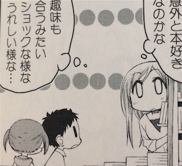

ゆゆ式 Advent Calendar 2016 3日目:ゆゆ式モブキャラ達
壮大に遅刻しました。。。
ゆゆ式 Advent Calendar 2016 の3日目に記事になります。
3年目に突入したゆゆ式のAdvent Calendar！めでたい！
去年はBlue-ray Boxが出てハッピーな感じでしたが、今年もスペシャルエピソードのOVAが出るみたいでまだまだ勢いがありますね。
さて今回はゆゆ式に登場するモブキャラをまとめてみようと思います！
(名もなきキャラだけどレギュラーっぽいキャラがいるはずだ！と意気込んでいましたが抽出するだけで終わってしまいました)
第1巻5Pその1
初モブ

第1巻49P
本屋のお姉さん、モブ初しゃべり

ポニテ

お姉さん無双

ツッコミ○

第1巻50P
めずらしい男性陣モブ

第1巻90P
美術部の先輩、1コマだけなのにキャラ濃い

第2巻58P
あいちゃんとゆずこが仲良くなったきっかけの時にいた子供たち



第3巻57P
おかち、財布忘れる

唯ちゃんのお母さんと似てる


第4巻15P
しなんとかさん

第4巻47P
縁ちゃんのお兄ちゃん再び


{kind=link}
{kind=link}
{kind=link}
{kind=link}
{kind=link}
{kind=link}
{kind=link}
{kind=link}
{kind=link}
{kind=link}
{kind=link}
{kind=link}
{kind=link}
{kind=link}
{kind=link}
{kind=link}
{kind=link}
{kind=link}
{kind=link}
第5巻21P
お団子モブ

第5巻30P

第5巻55P
あいちゃん突き指

{kind=link}
{kind=link}
第6巻33P

{kind=link}
第6巻111P
ペア

第7巻3P
1巻以来のカラー！

第7巻20P
廊下とかトイレは多い気がする

{kind=link}
{kind=link}
第8巻12P
見切れてるけど目が描かれている子

第8巻30P
ペア

{kind=link}
第8巻86P
ペア

まとめ
統計(雑)
- 1巻:9コマ(11人)
- 2巻:11コマ(12人)
- 3巻:9コマ(11人)
- 4巻:11コマ(9人)
- 5巻:3コマ(5人)
- 6巻:5コマ(10人)
- 7巻:4コマ(5人)
- 8巻:5コマ(9人)
だんだん減ってきている？
あいちゃん組が合流したからかな？
巻を跨いで出てきた人
- 縁ちゃんのお兄ちゃん(第2巻70P、第4巻47P)
最後に
個人的には後ろでゆるく結んでる唯ちゃんのお母さんが好きなのでまた出してください!
お願いします、なんでもしますから！